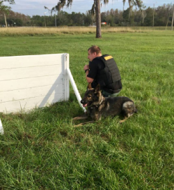

Overview
Dogs are a mans best friend and a mans best helper. K-9 units are becoming more and more popular in many police departments. Pasco Sheriffs Office (PSO) is one that has a very large K-9 association. The PSO has 17 active duty K-9’s and 5 retired K-9s that are always being continuously trained and challenged so their minds are on point.
The K-9’s are used for numerous different situations. They help trace down suspects by following the trail of the scent of the person to make sure they are captured. The K-9’s are also used to help find people that have gone missing with the same concept of a trail of a scent. They can also be used to search people’s cars, houses, and other properties for illegal substances. The dogs will alert if they get a whiff of a narcotic meaning there is illegal substances in the property or there have been recently.
At PSO K9’s Benco, Chris, Farrell, Jango, J.R., Strong, Shep, Titan, Tundra, Yager, and Yogi are all German Shepards. These are the most common types of Police dogs. We also have K9’s Dobies, Doc, and Mac who are Labrador Retrievers. K9 Buster, Knox are the only bloodhounds on the team. Lastly, K9 Hela is the newest member and she is the first and only Golden Retriever. Some of these dogs are only for Narcotics, some are only for tracking people and some of them do both. They are trained in the different ways above depending on their specialties.
As mentioned before, PSO has 5 retired K-9’s: Thor, Ace, Eragon, Jet, and Fin. K9 Thor is the most recent retired K-9 lives with K9 Hela because as soon as Thor retired, his handler was able to get Hela and trained him up to par. The K-9’s retire once they start getting around 7 due to the life span of the bigger dogs that are on the team is around 9. They aren’t to make sure their senses are up to par but as the dogs get older, their sight and smell slowly start to decrease and they do not want that hindering the K-9 handlers. They still bring the retired K-9’s to training sessions so that they can continue to be active and exercised.
Our K-9’s risk their lives daily without asking anything in return. They serve and protect our deputies and our citizens with loyalty and humility ~Pasco Sheriff Chris Nocco
The K-9's and their Handlers
| K9 Benco | Deputy Patrick Bingham |
| K9 Buster | Deputy Chris Miller |
| K9 Chris | Corporal Joe Liddick |
| K9 Dobies | Deputy Christina Demas |
| K9 Doc | Deputy Brian Hernandez |
| K9 Farrell | Deputy Jeremie Garcia |
| K9 Hela | Corporal John Rux |
| K9 Jango | Deputy Chris Stockton |
| K9 J.R. | Deputy Chris Stone |
| K9 Knox | Deputy Rob Wilkins |
| K9 Mac | Deputy Scott Grant |
| K9 Strong | Deputy Ricky Frisco |
| K9 Shep | Deputy Nick Carmack |
| K9 Titan | Sergeant William Ferguson |
| K9 Tundra | Corporal Cliff Baltzer |
| K9 Yager | Deputy Mike Sentner |
| K9 Yogi | Deputy Mark Pini |